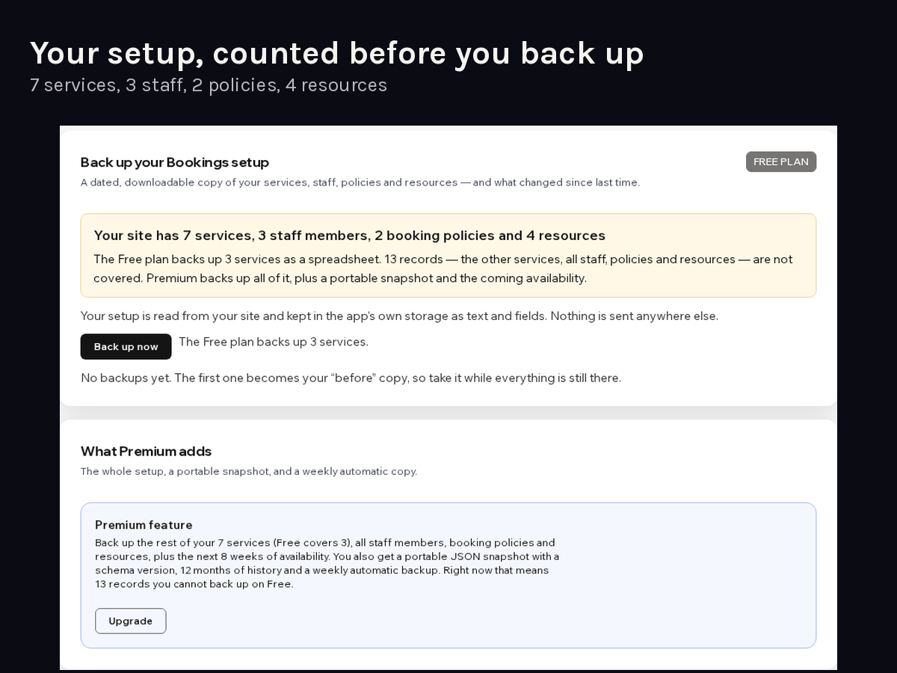

Bookings Setup: Backup
Save every service, staff schedule and policy
- Free exports your first 3 services as a sheet
- Premium backs up every service and setting
- Staff, policies and resources, all included
- A snapshot file you can carry to another site

What it does
Setting up services, staff, weekly schedules, booking policies and resources takes hours, and the setup exists only inside this site. If the site is lost or you open a second location, there is nothing to import, and the work starts again.
Press Back up now and the app reads your services, staff members, booking policies and resources through your dashboard, then writes a dated snapshot into the app. The panel starts with your own numbers, so you see exactly what a backup covers. After every copy it lists what is new, missing or changed.
A backup downloads as a ZIP with one spreadsheet per kind: services with names, durations, prices, add-ons and staff, the staff list, booking policies, resources, and eight weeks of bookable windows. The same records come as a versioned JSON snapshot, ready for another site. Service photos and other media are not included, and the panel says so.
Free exports your first three services and keeps two copies. Premium covers every service and setting, keeps twelve months of history and takes an automatic copy the first time you open the page after a week. Premium is $6 a month, or $5 a month billed yearly, with a 14-day free trial.
Price
Free
- Your first 3 services, as a spreadsheet
- A versioned snapshot file
- The two most recent copies
Premium
$6/month, or $5/month billed yearly ($60/year), 14-day free trial
- Every service, plus staff, policies and resources
- Eight weeks of availability per service
- 12 months of history and a weekly automatic copy